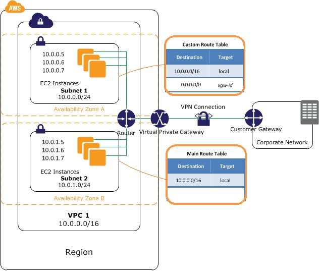
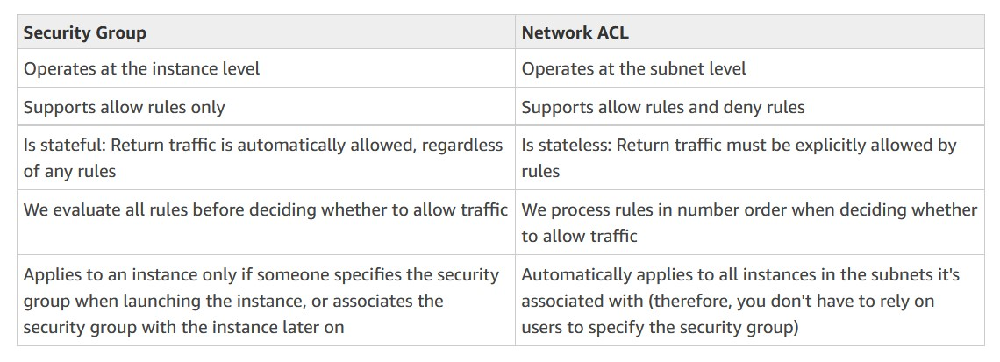
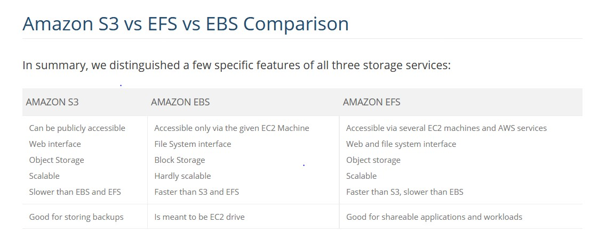
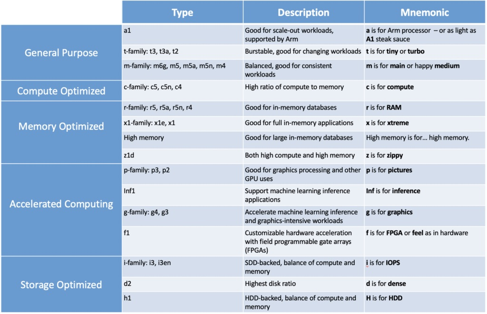

Background:
I have been working as a Principal Analyst on proof of concept project supporting migration to Cloud Computing for my company. Having completed the project (over two years) and a taste of development and deployment on the AWS, I am very keen to learn in a more structured approach and fill missing knowledge gaps. Also seeing the capability particularly with scalability, reproducibility and infrastructure as code I have chosen the DevOps learning path.
After the Developer associate exam, I am now attempting the SysOps Administrator in preparations for DevOps professional. The SysOps exam validates technical expertise in deployment, management, and operations on the AWS platform. Exam concepts you should understand for this exam include:
· Deploying, managing, and operating scalable, highly available, and fault tolerant systems on AWS
· Migrating an existing on-premises application to AWS
· Implementing and controlling the flow of data to and from AWS
· Selecting the appropriate AWS service based on compute, data, or security requirements
· Identifying appropriate use of AWS operational best practices
· Estimating AWS usage costs and identifying operational cost control mechanisms
My learning path and recommendations.
1. Firstly, I went through A Cloud Guru course to prepare for my content. Taking notes especially around exam tips, having used them for the Developers I am a little more familiar with style and some cross order content (recommend increasing play to 1.5 or 2x).
2. For practice tests I used Udemy. In the past I had used WhizLabs and would recommend both, however Udemy at the time had a special price. For practice tests after completing, it is important to review all answers (not just the incorrect) and relate them to AWS documentations. Ensure you are achieving a 85– 90% before attempting exam.
3. The AWS FAQs are a very good revision and will add to your understanding of concepts.
4. I had a quick skim through some of the recommended white papers.
5. As a visual learner I found sketching a mind map putting together concepts/ideas and making some cheat sheets.
Based on my memory from the last exams I will adopt the following approaches 1) eliminating incorrect questions 2) using flag to review questions 3) keeping an eye on time. My focus is on having a solid foundation on the below content and concepts.
Concepts
Networking
VPC is heavily tested in exam. One thing you should be able to do is confidently create a simple VPC with NAT and security groups, Access Control Lists, custom routeing and load balancing. The following scenarios help with my understanding of how all the components needed in a VPC work together.

Source: aws.amazon.com
CIDR assignment
· In a Route Table, the destination is always a CIDR block (like 0.0.0.0/0).
·
And the target is often the logical ID of an
AWS resource (like igw-xxxxxxxx) for the internet gateway).
Example in a private subnet’s route table:
Destination: 0.0.0.0/0 Target:i-2c2304np
Here i-2c2304np is the logical id of a NAT gateway. Any traffic from this private
subnet that’s destined for the internet (0.0.0.0/0) will go to the
NAT gateway. A NAT gateway allows an AWS resource’s private IP address to be
“translated” so it can reach the internet.
You can assign a netmask of /16 (65,536 IP
addresses) to /28 (16 IP addresses) for your AWS VPCs
and subnets. How many IP addresses do you get with a netmask of /25?
32 – 25 = 7. Then take that 7 and 2⁷ = 128
So, a netmask of /n has 2^(32-n) IP addresses. And /n can be between 16 and 28. Where does that 32 come from? An IP address has 32 possible binary values: 00000000.00000000.00000000.00000000.
Where does the 2^ come from? Each of the four groups of 8 zeros (octets) listed
above represent 256, 128, 64, 32, 16, 8, 4, 2, in other words, the powers of 2.
AWS typically
uses about 5 IP addresses of those IP addresses, to help you manage your
network. So, with a netmask of /n, you have 2^(32-n) – 5 usable IP addresses.
Security and Compliance
In Security Group and NACLs there may be various questions around inbound and outbound rules for security groups and NACLs.

Storage and Data Managements
S3 - Lifecycle policies, bucket policies, analytics vs server access log and differences in storages.

Deployment and Provisioning
Be aware of limitations with EC2, such as 20 on-demand and reserved instances. Also, the various configuration of CPU, memory, storage and networking instances.
· t-type and m-type for general purpose
· c-type for compute optimised
· r-type, x-type and z-type for memory optimised
· d-type, h-type and i-type for storage optimised
· f-type, g-type and p-type for accelerated computing
For more detail and to help commit to memory see the below table description and mnemonic .

Monitoring and Metrics
For billing and be familiar with Cost Optimization Monitor, TCO calculator, Simple Monthly Calculator and information in AWS Pricing page.
For system critical day to day operations understand functionality of X-Ray, QuickSight, trusted advisor, cloudwatch dashboard, service vs personal health dashboard and cloudtrail monitoring. Cloudwatch monitoring scripts for memory, swap and disk space utilisation and enabling detail monitoring for under 5min periods and aggregation of data.
Conclusion
So these are my exam tips, hope it helps with your study and wish you lots of success!